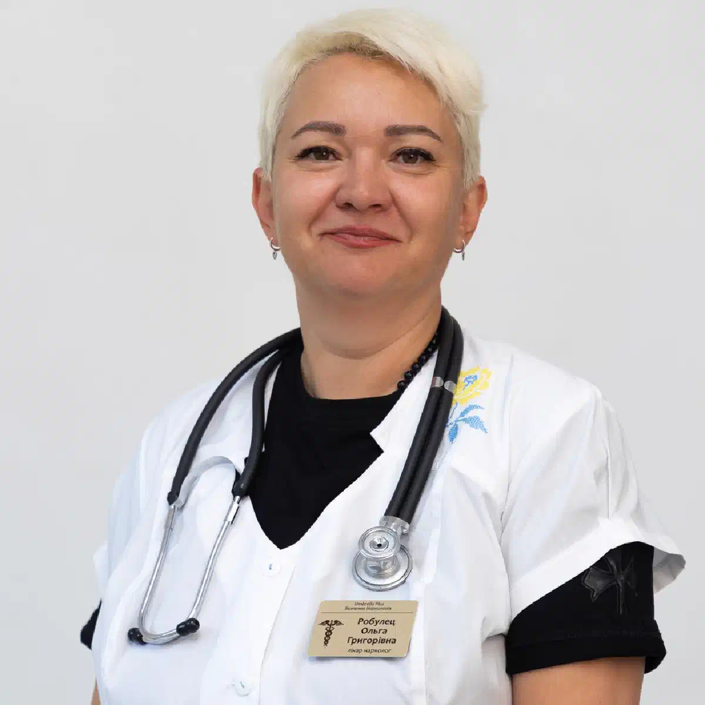

+38(068)
79 72 782
+38(068)
79 72 782Вывод из запоя в Индустриальном районе Харькова
Анонимная помощь нарколога на дому 24/7


Бесплатная консультация, работаем круглосуточно 24/7
Анонимная помощь нарколога на дому 24/7

Дата написания: 14 окт. 2026 г.
Последнее обновление: 14 окт. 2026 г.
Вывод из запоя в Индустриальном районе Харькова — медицинская помощь пациентам, столкнувшимся с длительным употреблением алкоголя, выраженной интоксикацией и симптомами алкогольной абстиненции. Продолжительный запой может сопровождаться тремором рук, повышенным артериальным давлением, тахикардией, тревожностью, бессонницей, тошнотой и общей слабостью. Вывод из запоя на дому в Харькове предусматривает первичный осмотр нарколога, оценку состояния пациента и подбор индивидуальной тактики лечения. При неосложнённых состояниях медицинская помощь может проводиться дома, тогда как тяжёлая алкогольная абстиненция требует стационарного наблюдения. Выезд нарколога может быть организован для жителей ХТЗ, Рогани, Горизонта и других территорий Индустриального района. Своевременное обращение к специалисту помогает снизить риск опасных осложнений и определить дальнейший план лечения алкогольной зависимости.
Вывод из запоя в Индустриальном районе Харькова включает медицинские мероприятия, направленные на стабилизацию состояния пациента после длительного употребления спиртного. Врач оценивает тяжесть алкогольной абстиненции, наличие обезвоживания, сопутствующих заболеваний и возможных осложнений. В зависимости от результатов обследования назначается медикаментозная терапия, коррекция водно-электролитных нарушений и дальнейшее наблюдение. Домашнее лечение возможно только при стабильном состоянии и отсутствии факторов высокого риска. При тяжёлой абстиненции, судорогах или нарушениях сознания необходима госпитализация. Наркологическая помощь в Харькове должна учитывать индивидуальные особенности пациента, продолжительность употребления алкоголя и предыдущие эпизоды синдрома отмены.
Обращение к наркологу рекомендуется при невозможности самостоятельно прекратить употребление алкоголя, повторных запоях и ухудшении самочувствия после отказа от спиртного. Поводом для консультации становятся выраженная слабость, тремор рук, потливость, тревожность, тахикардия, повышение давления и нарушения сна. Подобные симптомы могут указывать на алкогольную абстиненцию. Консультация нарколога в Харькове позволяет определить тяжесть состояния и необходимость лечения. Особенно важно своевременно обращаться за медицинской помощью пациентам с хроническими заболеваниями сердца, печени, почек и ранее перенесёнными осложнениями алкогольной отмены. При судорогах, галлюцинациях или спутанности сознания необходимо немедленно вызвать скорую помощь.
Запой характеризуется продолжительным или повторяющимся употреблением алкоголя, которое человек не может самостоятельно контролировать. После нескольких дней употребления могут появляться тошнота, головная боль, снижение аппетита, выраженная слабость и обезвоживание. При физической зависимости уменьшение количества спиртного или полный отказ от него способны вызвать тремор рук, тревожность, потливость, учащённое сердцебиение и бессонницу. Лечение алкогольной абстиненции необходимо при клинически значимых проявлениях синдрома отмены. Особенно опасны судорожные приступы, выраженное возбуждение, галлюцинации и нарушения сознания. Такие симптомы требуют экстренной медицинской помощи, поскольку домашнее лечение может быть недостаточным.
Продолжительное употребление алкоголя негативно влияет на работу печени, сердца, поджелудочной железы, головного мозга и нервной системы. Во время запоя могут развиваться обезвоживание, электролитные нарушения, аритмии, повышение давления и обострение хронических заболеваний. После прекращения употребления у зависимого человека существует риск тяжёлого синдрома отмены, включая судороги и алкогольный делирий. Детоксикация от алкоголя в Харькове может быть частью лечения острых нарушений, но не заменяет специализированную терапию абстиненции. Своевременное обследование позволяет оценить состояние внутренних органов, выявить осложнения и определить необходимый уровень медицинской помощи.
Вызов нарколога на дом в Индустриальном районе Харькова позволяет организовать первичный осмотр пациента по месту проживания. Такой формат может быть удобен при слабости, тошноте, тревожности и других неосложнённых симптомах. Перед приездом специалиста желательно сообщить возраст пациента, продолжительность запоя, время последнего употребления спиртного, основные жалобы и хронические заболевания. Врач измеряет давление, пульс, сатурацию кислорода, оценивает сознание и выраженность абстиненции. Срочный вызов нарколога в Харькове может быть доступен жителям ХТЗ, Рогани, Горизонта и прилегающих территорий. Возможность домашнего лечения определяется только после оценки состояния и исключения опасных осложнений.
Срочный вывод из запоя на дому в Харькове предполагает оперативную организацию медицинского осмотра и определение необходимого лечения. При появлении тремора, тревожности, тахикардии, бессонницы или других симптомов отмены важно не откладывать обращение к специалисту. Нарколог оценивает состояние пациента, риск судорог и возможность амбулаторного лечения. При наличии показаний назначаются лекарственные препараты и наблюдение. Круглосуточное обращение в наркологическую службу не означает, что любое состояние можно безопасно лечить дома. При потере сознания, судорогах, нарушениях дыхания или выраженной спутанности необходимо немедленно вызвать скорую помощь по номеру 103.
Для многих пациентов важным условием обращения становится конфиденциальность. Анонимный вывод из запоя в Харькове предполагает соблюдение медицинской тайны и защиту персональных данных. Пациент может обсудить проблему употребления алкоголя с наркологом и получить рекомендации по дальнейшему лечению. Возможность обслуживания без определённых форм регистрации зависит от действующего законодательства и условий медицинского учреждения. Конфиденциальность не отменяет необходимость медицинского обследования и оформления предусмотренной документации. Анонимная наркологическая помощь на дому может включать консультацию, оценку состояния, лечение по показаниям и рекомендации по профилактике повторных запоев.
Первичный осмотр начинается со сбора жалоб и сведений о продолжительности употребления алкоголя. Нарколог уточняет время последнего приёма спиртного, наличие предыдущих запоев, судорог, алкогольного делирия и хронических заболеваний. Во время обследования измеряются давление, пульс, сатурация кислорода, температура тела и частота дыхания. Врач оценивает уровень сознания, выраженность тремора, признаки обезвоживания и возможные неврологические нарушения. При необходимости назначаются ЭКГ и лабораторные исследования. Осмотр нарколога на дому в Харькове помогает определить, возможно ли лечение в домашних условиях или пациент нуждается в стационарном наблюдении.
Вывод из запоя на ХТЗ и вывод из запоя на Рогани могут проводиться в формате выездной наркологической помощи при наличии обслуживания соответствующего адреса и медицинских показаний. В Индустриальном районе выезд может быть доступен жителям улицы Архитектора Алёшина, проспекта Героев Харькова, района станции метро «Индустриальная», Горизонта и прилегающих территорий. Отдельные адреса Новых Домов относятся к другим административным районам, поэтому возможность обслуживания уточняется индивидуально. При домашнем осмотре врач оценивает состояние пациента, определяет риск осложнений и выбирает необходимую терапию. Вывод из запоя на дому Харьков проводится только при отсутствии противопоказаний к амбулаторному лечению.
Капельница от алкоголя на дому в Харькове может назначаться при обезвоживании, нарушениях водно-электролитного баланса и других медицинских показаниях. Перед процедурой врач оценивает состояние сердечно-сосудистой системы, давление, пульс и противопоказания. Состав раствора, объём и скорость введения определяются индивидуально. При необходимости используются изотонические растворы, проводится коррекция электролитов и назначается тиамин. Инфузионная терапия не ускоряет существенно метаболизм алкоголя и не предотвращает самостоятельно судороги или делирий. Капельница от запоя на дому рассматривается как дополнительный метод помощи, а не универсальный способ лечения алкогольной абстиненции.
Медикаментозное лечение зависит от тяжести синдрома отмены и сопутствующих нарушений. При клинически значимой алкогольной абстиненции могут применяться бензодиазепины под медицинским контролем для предупреждения судорог и делирия. При риске дефицита витамина B1 назначается тиамин, при обезвоживании проводится восполнение жидкости, а при электролитных нарушениях — соответствующая коррекция. Препараты для выведения из запоя подбираются после обследования с учётом возраста, состояния печени, почек и сердечно-сосудистой системы. Самостоятельное использование седативных препаратов, особенно вместе с алкоголем, опасно из-за возможного угнетения дыхания.
Детоксикация направлена на лечение острых нарушений, возникающих после длительного употребления алкоголя. У пациента могут наблюдаться обезвоживание, потеря аппетита, нарушения сна, тремор и электролитные расстройства. Алкогольная детоксикация на дому в Харькове возможна при отдельных неосложнённых состояниях, когда врач может обеспечить необходимые условия лечения. При наличии показаний назначаются растворы для восполнения жидкости, препараты для контроля абстиненции и коррекция выявленных нарушений. Продолжительность лечения определяется индивидуально. После стабилизации состояния важно обсудить дальнейшее лечение алкоголизма в Харькове, поскольку детоксикация не устраняет причины алкогольной зависимости.
Стоимость вывода из запоя в Индустриальном районе Харькова начинается от 2199 грн.
| Популярные услуги | Цена |
|---|---|
| Нарколог Харьков | От 1500 грн |
| Капельница от алкоголя | От 2199 грн |
| Вывод из запоя на дому | От 2199 грн |
| Кодирование от алкоголизма | От 6000 грн |
После трёх-пяти дней употребления спиртного пациент может испытывать слабость, тошноту, тревожность, тремор рук и нарушения сна. Тяжесть состояния зависит не только от продолжительности запоя, но и от количества алкоголя, хронических заболеваний и предыдущих эпизодов абстиненции. Вывод из запоя после пяти дней употребления начинается с медицинского осмотра и оценки риска осложнений. При неосложнённом состоянии возможно лечение дома с назначением соответствующих препаратов и наблюдением. Если выявляются выраженные симптомы отмены, нестабильные показатели или высокий риск судорог, необходимо стационарное лечение.
Запой продолжительностью 7–10 дней может сопровождаться выраженной слабостью, бессонницей, потерей аппетита, тахикардией, повышенным давлением и обезвоживанием. После прекращения употребления спиртного существует риск развития тяжёлого синдрома отмены. Вывод из длительного запоя в Харькове требует тщательной оценки состояния пациента, включая наличие хронических заболеваний и перенесённых ранее осложнений. При необходимости назначается медикаментозная терапия, коррекция электролитных нарушений и стационарное наблюдение. Домашняя капельница не может заменить полноценное лечение при высоком риске судорог, галлюцинаций или алкогольного делирия.
Вывод из запоя за три дня в Харькове может рассматриваться как условный формат поэтапной помощи при неосложнённой алкогольной абстиненции. В первый день проводится обследование, оценка риска осложнений и назначение терапии. На второй день врач контролирует динамику состояния, выраженность тремора, тревожности, показатели давления и сна. На третий день оцениваются результаты лечения и составляется план дальнейшего наблюдения. При этом симптомы отмены могут сохраняться дольше, а тяжёлые осложнения иногда развиваются не сразу. Продолжительность медицинской помощи определяется состоянием пациента, а не заранее установленным количеством дней.
Алкогольная абстиненция развивается у людей с физической зависимостью после прекращения или значительного уменьшения употребления спиртного. Основные проявления включают тремор, потливость, тревожность, тахикардию, повышение давления и бессонницу. Лечение алкогольного абстинентного синдрома в Харькове направлено на облегчение симптомов и предупреждение судорог и делирия. В зависимости от тяжести состояния врач назначает необходимые препараты, оценивает водно-электролитный баланс и определяет условия наблюдения. При тяжёлой абстиненции требуется госпитализация. Инфузионная терапия применяется только по показаниям и не заменяет специфическое лечение синдрома отмены.
После начала лечения пациент может отмечать уменьшение тревожности, тошноты, тремора и сердцебиения. Однако скорость восстановления зависит от тяжести абстиненции, продолжительности употребления алкоголя и сопутствующих заболеваний. У некоторых людей слабость, нарушения сна и снижение аппетита сохраняются несколько дней или дольше. Восстановление после алкогольной детоксикации включает соблюдение рекомендаций врача, полноценное питание и дальнейшее наблюдение. Важно учитывать, что раннее улучшение самочувствия не всегда означает исчезновение риска осложнений, особенно в первые дни после прекращения употребления спиртного.
Одна капельница не способна устранить все последствия длительного употребления алкоголя. При выраженной абстиненции пациенту могут требоваться медикаментозная терапия, коррекция электролитных нарушений, контроль давления и наблюдение в течение нескольких суток. Комплексное лечение запоя в Харькове направлено на стабилизацию состояния и предупреждение тяжёлых осложнений. При судорогах, галлюцинациях, нарушениях сознания или высоком риске делирия необходимо стационарное лечение. Повторные инфузии без медицинских показаний не заменяют полноценную терапию алкогольной абстиненции.
Алкогольная абстиненция может сопровождаться тахикардией, повышением давления и нарушениями сердечного ритма. У пациентов с сердечно-сосудистыми заболеваниями подобные симптомы требуют особенно внимательной оценки. Вывод из запоя при повышенном давлении начинается с обследования, измерения жизненно важных показателей и при необходимости проведения ЭКГ. Врач учитывает принимаемые препараты, состояние сердца и риск осложнений. Избыточная инфузионная нагрузка может быть опасна при сердечной недостаточности. При боли в груди, выраженной одышке или подозрении на инсульт необходимо немедленно вызвать скорую помощь.
Домашнее лечение не подходит пациентам с тяжёлой алкогольной абстиненцией, судорогами, галлюцинациями, спутанностью сознания, нестабильным дыханием и серьёзными сопутствующими заболеваниями. Дополнительными факторами риска являются ранее перенесённый алкогольный делирий и отсутствие безопасных условий наблюдения. Наркологический стационар в Харькове позволяет проводить необходимые исследования, медикаментозное лечение и регулярный контроль состояния. При тяжёлых симптомах нельзя ограничиваться домашней капельницей или самостоятельным приёмом препаратов. Если появились судороги, потеря сознания или нарушения дыхания, необходимо немедленно вызвать скорую помощь по номеру 103.
После стабилизации состояния врач может рекомендовать полноценное питание, соблюдение назначенной терапии, контроль артериального давления и дополнительное обследование. Особое внимание уделяется восстановлению сна, коррекции дефицитных состояний и лечению сопутствующих заболеваний. Консультация нарколога после запоя необходима для оценки риска повторного употребления алкоголя и определения дальнейшей тактики. Детоксикация устраняет отдельные острые нарушения, но не является полноценным лечением зависимости. Для поддержания длительной ремиссии могут потребоваться медикаментозная терапия, психотерапия и реабилитация.
Профилактика повторных запоев предполагает лечение алкогольной зависимости после стабилизации физического состояния. Анонимное лечение алкоголизма в Харькове может включать медикаментозную поддержку, мотивационное консультирование, психотерапию и участие в реабилитационных программах. Пациенту важно научиться распознавать ситуации, провоцирующие употребление, и сформировать план действий при появлении тяги к спиртному. Поддержка родственников и регулярное наблюдение специалиста помогают сохранить мотивацию к восстановлению. Комплексный подход позволяет снизить риск рецидива и улучшить качество жизни.
Чтобы организовать вызов нарколога для выведения из запоя в Индустриальном районе Харькова, необходимо связаться с медицинской службой и сообщить адрес, возраст пациента, продолжительность употребления алкоголя, время последнего приёма спиртного и основные жалобы. Важно предупредить о хронических заболеваниях, принимаемых лекарствах, предыдущих судорогах и алкогольном делирии. Выездная помощь может быть доступна жителям ХТЗ, Рогани, Горизонта и прилегающих территорий. После осмотра врач определяет возможность домашнего лечения, необходимость дополнительных процедур или госпитализации. Нарколог на дом в Индустриальном районе Харькова вызывается для медицинского обследования и помощи при состояниях, допускающих амбулаторное лечение.
Круглосуточная наркологическая помощь в Харькове позволяет обратиться за консультацией при запое, алкогольной абстиненции и других последствиях употребления спиртного независимо от времени суток, если соответствующая медицинская служба работает 24/7. Специалист предварительно уточняет состояние пациента, основные симптомы и возможные факторы риска. При отсутствии признаков неотложного состояния может быть организован осмотр нарколога на дому и назначено необходимое лечение. Анонимный вызов нарколога на дом в Харькове предусматривает соблюдение конфиденциальности и индивидуальный подход к пациенту. После стабилизации состояния врач может рекомендовать дальнейшее лечение алкогольной зависимости и профилактику повторных запоев. При судорогах, выраженной спутанности сознания, потере сознания или нарушениях дыхания необходимо немедленно вызвать экстренную медицинскую помощь по номеру 103.
Телефон для консультации и вызова нарколога на дом в Харькове: +38(050-021-69-57)

Статья проверена экспертом
Богоденко Констянтин
Врач анастезиолог, ординатор
Возможно интересная статья:
Лекарства, несовместимые с алкоголем: риск тяжёлых осложнений и летального исхода

Да. Вызов нарколога на дом проводится полностью конфиденциально. Для военнослужащих ЗСУ помощь предоставляется с соблюдением повышенных требований к анонимности и конфиденциальности, без постановки на наркологический учёт. Перед началом оказания помощи врач уточняет жалобы, длительность употребления алкоголя, наличие хронических заболеваний и принимаемые препараты.
Да, при выраженной алкогольной интоксикации капельница может быть не только допустима, но и необходима. Ждать, пока человек полностью протрезвеет, требуется не всегда. Врач оценивает уровень сознания, дыхание, давление, пульс, степень обезвоживания и общее состояние пациента, после чего решает, можно ли проводить инфузионную терапию на дому. Капельница помогает восполнить жидкость и электролиты, уменьшить проявления интоксикации и поддержать организм в период выведения алкоголя. При этом состав препаратов подбирается только врачом, поскольку некоторые лекарства на фоне алкоголя могут быть опасны.
Во многих случаях вывод из запоя можно провести на дому, если состояние пациента остаётся относительно стабильным и отсутствуют признаки тяжёлых осложнений. Перед началом лечения врач оценивает артериальное давление, пульс, частоту и характер дыхания, уровень сознания и выраженность абстинентного синдрома. Всем пациентам проводится ЭКГ для оценки работы сердца и выявления возможных нарушений ритма или других изменений со стороны сердечно-сосудистой системы. При тяжёлом состоянии, выраженной абстиненции, нарушении сознания, судорогах или других опасных симптомах может потребоваться госпитализация в стационар.
Как правило, по городу врач приезжает в течение 20–60 минут. Время выезда по области рассчитывается индивидуально и зависит от удалённости населённого пункта. При обращении диспетчер уточняет точный адрес, состояние пациента и основные симптомы, после чего сообщает ориентировочное время прибытия.
Продолжительность инфузионной терапии зависит от состояния пациента, состава капельницы и объёма вводимых растворов. В среднем капельница длится от 1 до 3 часов. Точное время процедуры врач определяет после осмотра пациента с учётом выраженности интоксикации, общего состояния и реакции организма на лечение.
Состав капельницы подбирается индивидуально после осмотра пациента. В инфузионную терапию входят детоксикационные растворы, глюкоза, витамины, а также препараты для поддержки работы печени и сердечно-сосудистой системы. По показаниям врач может использовать успокаивающие и расслабляющие средства для уменьшения тревоги, тремора, внутреннего напряжения и других проявлений абстинентного синдрома. После завершения процедуры врач оценивает состояние пациента и при необходимости оставляет препараты в таблетках на ближайшие два дня с подробной схемой самостоятельного приёма для продолжения восстановления.
У пациентов улучшение самочувствия начинается уже во время процедуры или в первые часы после неё. Может уменьшаться тошнота, слабость, головная боль, сердцебиение, тревожность, внутреннее напряжение и тремор. Также лечение может способствовать нормализации сна и облегчению засыпания после запоя. Скорость восстановления зависит от длительности употребления алкоголя, общего состояния организма и выраженности алкогольного абстинентного синдрома.
Инфузионная терапия и назначенное врачом таблетированное лечение хорошо помогают уменьшить тревогу, внутреннее напряжение, тремор и нарушения сна, которые часто возникают после длительного употребления алкоголя. У многих пациентов после стабилизации состояния снижается тревожность, становится легче заснуть и постепенно восстанавливается нормальный сон.
После длительного регулярного употребления резкое прекращение алкоголя может сопровождаться выраженным абстинентным синдромом. Возможны сильный тремор, тахикардия, повышение давления, тревога, бессонница, судороги, галлюцинации и алкогольный делирий. Поэтому при длительном запое безопаснее проходить прекращение употребления под медицинским наблюдением.
Стационарное лечение может потребоваться при тяжёлом абстинентном синдроме, судорогах, галлюцинациях, выраженной спутанности сознания, подозрении на алкогольный делирий, нарушении дыхания, потере сознания, тяжёлых сопутствующих заболеваниях или невозможности безопасно контролировать состояние пациента дома. При таких симптомах необходима срочная наркологическая помощь.
Анонимно

Ну в хлопців просто золоті руки й світла голова, мене капали Олексій та Владислав, буквально за декілька сеансів я наче заново народився, до цього пив більше 3х тижнів, не міг зупинитись, дуже радий що знайшов саме цих спеціалістів, всім рекомендую
Анонимно
В течение нескольких лет я злоупотреблял алкоголь, что привело к увольнению с работы и вызвало у меня мысли о суициде. Понимая, что такой образ жизни неприемлем, я обратился за помощью в клинику “Амбрела”. Здесь я смог преодолеть свою зависимость от спиртного благодаря заботливым и опытным врачам, а также эффективной системе лечения. Спустя более года я полностью избавился от желания употреблять алкоголь, и теперь моя жизнь вернулась в норму. Я даже не приближаюсь к спиртному! Благодарю врачей клиники “Амбрела” за их помощь и заботу.
Анонимно
Я обращался за помощью в различные клиники, пытаясь избавиться от своей зависимости от алкоголя, но без особых успехов. Никак не мог справиться с желанием прибегнуть к бутылке, пока друг не посоветовал мне обратиться в центр “Амбрелла”. Я записался на прием и был поражен заботливым отношением к пациентам. Уже прошло два года, и теперь я смотрю на алкоголь с абсолютной равнодушием, активно занимаюсь спортом и улучшил отношения в семье. Благодаря центру “Амбрелла” моя жизнь была спасена от алкогольной зависимости!
Анонимно
Хочу выразить свою благодарность врачам из центра алкоголизма “Амбрела” за то, что они буквально спасли мою жизнь. В течение последнего года я сильно увлекался питьем, и все это привело к катастрофическим последствиям. Хотя я ходил на терапевтические сеансы, но безрезультатно. Тогда я нашел адрес клиники “Амбрела” в интернете, изучил отзывы и информацию о центре, и записался на прием. Там мне сразу предложили методику лечения, которая помогла не только справиться с физической ломкой, но и психической зависимостью от алкоголя. Не буду распространяться, скажу только одно - после пребывания в этой клинике я стал другим человеком, и навсегда забыл, что такое привкус алкоголя. Больше меня не тянет на это! Я искренне верю, что в центре “Амбрела” трудятся настоящие целители душ!
Анонимно
После сложного развода мой сын начал подавлять свою обиду и горе употреблением алкоголя. Он старался скрывать это от меня, но я, как мать, почувствовала, что что-то не так. В конечном итоге, ситуация стала критической. Моя знакомая посоветовала мне обратиться в клинику “Амбрела”. Я была приятно удивлена их работой! Они помогли сыну преодолеть очередной период злоупотребления алкоголем, и с тех пор прошел уже более года, и он совсем не пьет.
Анонимно
Благодаря вашей помощи, моя семья была спасена. Я с трудом уговорила мужа начать лечение, и последний каплей был пьяное ДТП. К счастью, в аварии никто не пострадал, но это был для него сигнал к действию. Он наконец согласился пройти курс лечения на дому, в стационар не хотел ложиться. Лечение было трудным, и были моменты, когда срыв был настолько близок, но благодаря вашему центру Амбрелла мы справились с этим.
Анонимно
Для меня эта клиника стала настоящим спасением! Долгое время я упорно отказывался от лечения, уверен был, что со мной все в порядке. Но к счастью, семья уговорила меня попробовать. И сегодня я чувствую себя невероятно счастливым, осознавая, что мне абсолютно не нужен алкоголь. Огромное спасибо за помощь и поддержку, которые я получил здесь! Я благодарен вам за новую возможность жить полноценной и счастливой жизнью!
Анонимно
Выражаю благодарность ребятам, которые оказали мне помощь и не отвернулись. Уже 10 месяцев я остаюсь чистой. Благодарю за то, что помогли найти новый путь в моей жизни.
Номер телефона:
+380 (68) 797 27 82
+380 (50) 021 69 57
Адрес наркологического центра вашего города уточняйте по
телефону
Работаем в: Киеве, Одессе, Львове, Харькове, Днепре,
Запорожье, Черкассах, Чугуеве, Черноморске, Каменском
Telegram: t.me/umbrellaplus
График работы: Круглосуточно